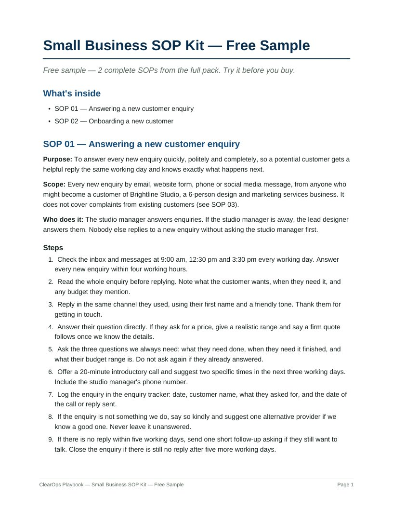

Small Business
Small Business SOP Kit
Ten ready-to-use procedures that cover the everyday running of a small service business — from answering enquiries and onboarding customers to invoicing, hiring and handling complaints. Every SOP is written out in full using a realistic example business, so you can follow it as it stands or adapt the names and numbers to your own business. No blanks to fill in, no jargon — just clear steps your whole team can follow from day one.

Running a small business means doing the same important jobs over and over — answering enquiries, taking on new customers, sending invoices, hiring, and sorting out problems when things go wrong. When those jobs live only in the owner's head, everything depends on one person, new team members have to guess how things work, and small mistakes turn into lost customers and late payments. The Small Business SOP Kit fixes that with ten complete, ready-to-use procedures that cover the everyday running of a small service business with roughly 1 to 25 people.
Every procedure is written out in full — never a blank template. Each one sets out its purpose, who does it, and numbered steps with concrete details you can actually follow: reply within four working hours, send a 50% deposit invoice before work starts, chase an overdue invoice on day 1, day 7, day 14 and day 30, and hold check-ins at the end of weeks one, two and four with a new starter. Each SOP also includes a quality check, what to do if it goes wrong, and what records to keep, so nothing is left to chance.
The procedures are written around Brightline Studio, an invented 6-person design and marketing services business, so every example feels real: the studio manager and lead designer have named roles, customers get welcome emails and kick-off calls, and suppliers are checked, tracked and paid on time. Because the business is fictional, you can adapt the names, amounts and timings to your own business without unpicking anyone else's branding. The kit covers the full customer journey and the back office behind it: answering new enquiries, onboarding new customers, handling complaints, invoicing and getting paid, chasing overdue invoices, hiring and onboarding team members, the start-of-day and end-of-day routine, ordering supplies and paying suppliers, posting on social media, and reporting and fixing problems.
Use it to train new staff, hand over jobs when someone is away, and make sure customers get the same good service no matter who is doing the work. You get the full kit as a PDF, an editable Word document and a Markdown file, so you can print it, edit it, or copy the text into your own systems. The free sample includes the first two SOPs in full, so you can try the kit before you buy.
Watch the video
A quick look at the small business this kit was written for.
What's inside
- SOP 01 — Answering a new customer enquiry
- SOP 02 — Onboarding a new customer
- SOP 03 — Handling a complaint
- SOP 04 — Invoicing and getting paid
- SOP 05 — Chasing an overdue invoice
- SOP 06 — Hiring and onboarding a new team member
- SOP 07 — Start-of-day and end-of-day routine
- SOP 08 — Ordering supplies and paying a supplier
- SOP 09 — Posting on social media
- SOP 10 — Reporting and fixing a problem (incident)
- PDF, Word (.docx) and Markdown (.md) versions included
Try the free version
The free version has SOP 01 and SOP 02 in full from this exact pack, in PDF, Word and Markdown. No sign-up, no email.
The full pack
The full pack has all 10 procedures in PDF, Word and Markdown. Checkout is being set up — the buy button will work soon. In the meantime, the free version above shows you exactly what the paid pack is like.
All sales of digital downloads are final. Please download the free version first and make sure this pack fits your business before you buy.